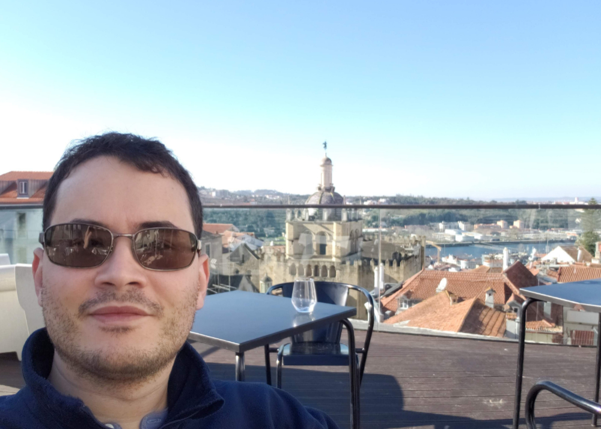

Currently, I'm a full stack developer at Activesoft Tecnologia e Serviços, working with React, Django and Microsoft SQL Server.
I graduated in Computer Engineer at Universidade Federal do Rio Grande do Norte (Brazil) and I also have a Bachelor in Science and Technology, graduated in the same institution. I always had interest for anything that light an LED or shows sensor data with the press of a button, might it be real or virtual.
In these last years, I developed projects for the Internet of Things for remote monitoring or for small automations, and created mobile apps utilizing the React Native framework. More recently, I have participated in a project to create patrol drones and another project for remote monitoring of machines with artificial neural networks.
I have experience with the Arduino platform, with NodeMCU (ESP8266) development boards, boards from Particle.io, APM 2, Pixhawk and Raspberry Pi microcomputers. I also have experience with Python/MicroPython, C/C++, JavaScript, HTML and CSS programming languages, SQL databases and ArduPilot and PX4 open source automatic pilots. I have expertise in 3D modelling with PTC Creo, Dassault Systèmes SolidWorks and Autodesk Fusion 360 and confection of printed circuit boards with Autodesk EAGLE and Labcenter Electronics Proteus.
I also have expertise in assembly and configuration of drones and 3D printers.
On a more personal note, I have interest in photography, music, Hi-fi devices, computers, video games, virtual reality, automobiles, dachshunds and the cosmos.
Every content in this website is of my authorship, except when I point out the author or the project/company to which it belongs.